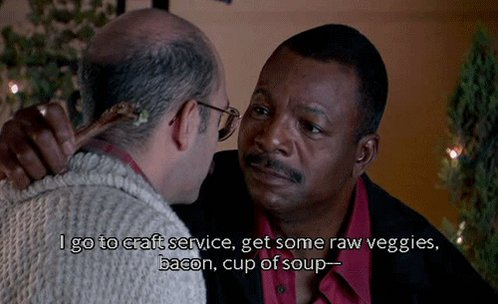

All Purpose Soup

Need to clean out the fridge? Baby, you've got a soup going!
Ingredients
- Better than Bullion
- Salt
- Bay Leaves
- Oregano
- Parsley
- Other spices of your choice
- Some kind of protein
- Vegetables that aren't too far gone from the fridge
- Root vegetables that aren't too far gone from the basket
- Some long forgotten frozen vegetables from the freezer
- A can of something from the back of the pantry
Preparation
- Prepare a pot of water or an instant pot
- Add a few spoons full of bullion until it tastes salty. Maybe add some extra salt
- Add the bay leaves.
- If you have soup bones or carcass leftover, boil/simmer it for a few hours and separate the meat and strain out the bones. The longer, the better.
- Chop the raw vegetables and add them
- Bring to a boil and simmer for 20-30 minutes
- Add your other spices
- Add any other protein and continue to simmer until it is cooked
- Add frozen and canned vegetables
- Simmer for a few more minutes
- Enjoy!
Back to all Recipes